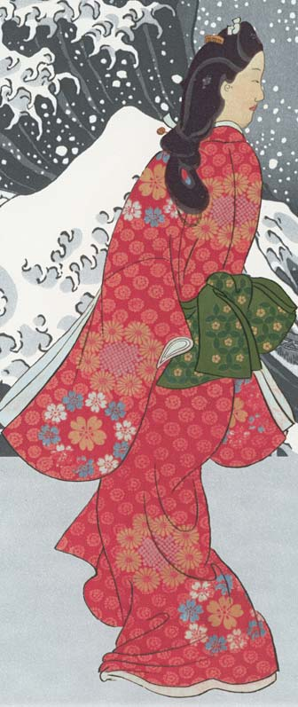
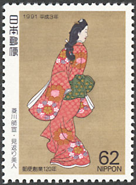
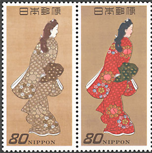
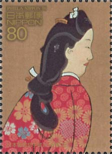

|
|


Mikaeri Bijin (A Beauty Looking Back), one of the pictures of beautiful women that Hishikawa Moronobu painted by hand, appeared on the first commemorative Japanese stamp, issued on Nov. 12, 1948 (Scott 422). It was issued to commemorate the Philatelic Week, traditionally celebrated between Nov. 29 - Dec. 5. On Dec. 3, 1948, the same stamp was issued imperforated, as part of a souvenir sheet, Sc. 143, sold in the philatelic exhibitions of Kanazawa and Takaoka. This painting was then reproduced on several later stamps, the last time so far on a sheet issued to celebrate the Japan World Stamp Exhibition PHILANIPPON '01, Tokyo, August 1st to 7th. This exhibition was an unique occasion for the Japanese postal administration to have a look back at its past that is marked by wonderful reproductions of art. The most interesting of them present the treasures of the woodblock print, a technique known under the name of Ukiyo-e. Nicely issued in big formats (a true revolution of the 1950s), these stamps also fully deserve the name of "beauties", a fact that the "expanding" title of this page tries to emphasize.
|
 |
|
In 1991 the Japan Post celebrated the 120th anniversary of postal services. On this occasion it reissued the famous print (Apr. 9, Scott 2082) For illustration purposes we show it here bigger then reality. Five years later, on June 3, 1996, in a series called "The history of postal stamps", the image of the stamp issued in 1948 was put near a second reissue of the painting (Sc. 2418 - 2419).
 |
 |
 |
And again five years later the famous painting reappeared, this time as a central and binding theme, on a sheet (see below) that represents a homage as well to the great artists of the past as to the philately itself, that popularized his works worldwide. The relevant painting is the first in the row on the sheet, and it is shown bigger above, on the right.

The miniature sheet is printed in six colors photogravure, reproducing the fine details of the renown work of arts that are displayed on it. The amateurs of art will of course recognize in the background the most famous painting of the Japanese art, the "Breaking Wave of Kanagawa", by Hokusai.
On further pages we will display as well the older issues, as bigger images taken from the above sheet and from a second sheet, that appeared in a self-adhesive version.
Links to pages on this site dedicated to the Japanese stamps:
-
Looking Back - 1 (Kunimasa Utagawa, Toyokuni Utagawa)
-
Looking Back at Beauty - 2 (Utamaro, Kyionara)